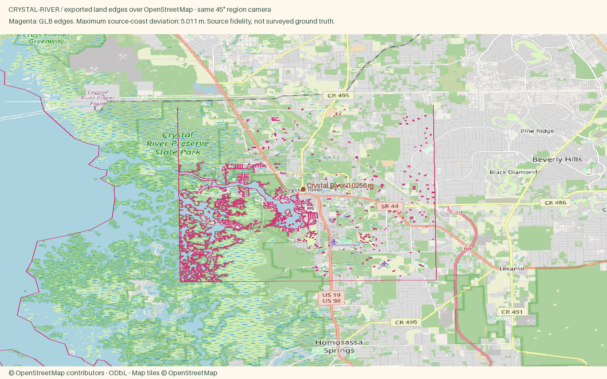

Crystal River
Open atlas · Accuracy CSV · Sourced medians
Region
Crystal River
Open districtA spring fed town on Kings Bay where hundreds of manatees spend the winter.
Source alignment

Manual fixes
- Recipes curated from Florida Coastal town profiles; facade colors are editorial, not per-building surveys.
- Town-wide published medians and the dated Ozello listing sample are labeled with their source and period.
- Existing Census land context continues beyond the OSM data rectangle, avoiding artificial water edges at the package boundary.
- Incomplete OSM residential footprints supplemented with non-overlapping Microsoft imagery footprints; source and local IDs retained.
Buildings include imagery-derived Microsoft Global ML Building Footprints (CDLA Permissive 2.0). Negative local IDs are not OSM IDs. Footprint provenance. The OSM overlay validates coast and district anchors, not the supplemental roofs.